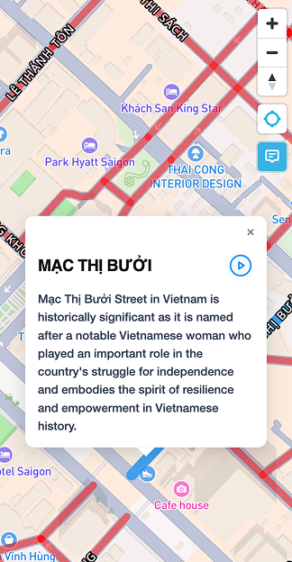

Travel🚶🏻➡️when stories talk 🗣️ to you
Listen to historical stories behind every corner when you're on the go. No tour guide needed. No research required. Just walk and enjoy.

Listen to historical stories behind every corner when you're on the go. No tour guide needed. No research required. Just walk and enjoy.
